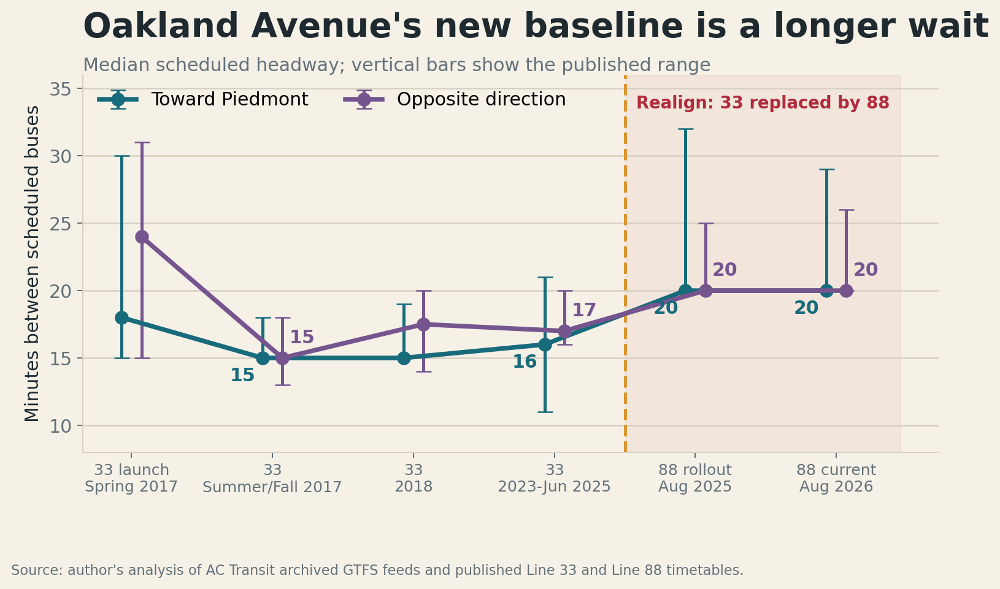
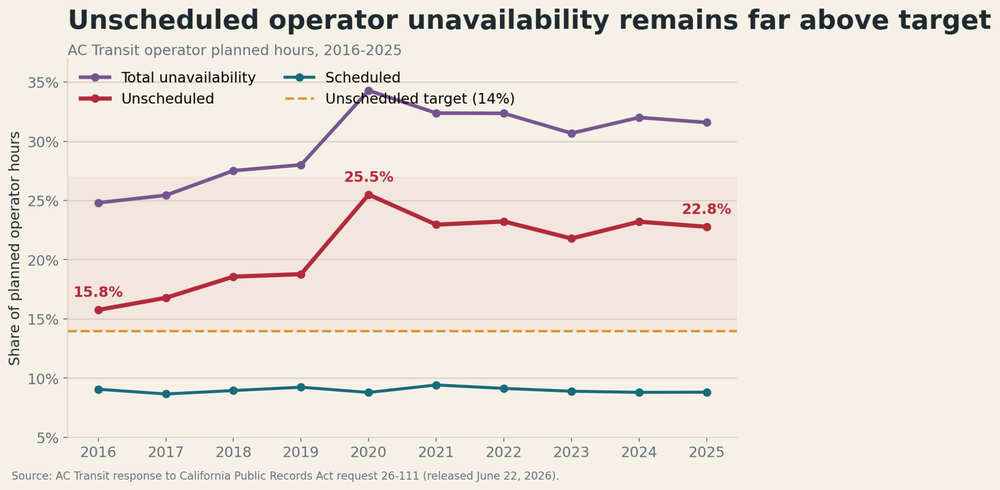
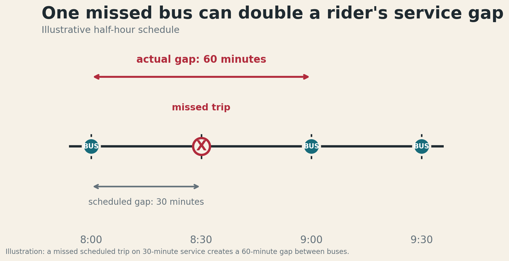
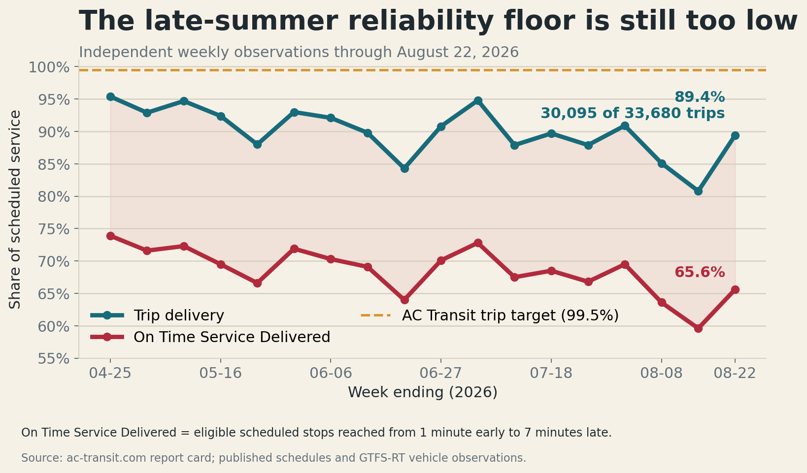
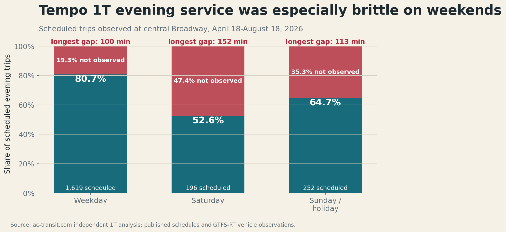

I have ridden AC Transit regularly for more than a decade. In the late 2010s, there was a period when it felt as though the system was getting better. On Oakland Avenue, Line 33 launched in spring 2017 with an uneven schedule, but by that summer and fall its median scheduled headway was about 15 minutes in both directions. Later schedules included gaps as tight as roughly 12 minutes. Then the pandemic happened, interrupting that progress. As service returned, the 33 eventually stabilized; by 2025 it had median headways of 16 to 17 minutes.
Oakland Avenue runs through Grand Lake and Adams Point, two dense, walkable neighborhoods where frequent transit should be a practical foundation for family life. When AC Transit introduced Realign, I understood the tradeoff being offered: the district would redesign and, in some places, reduce scheduled service so that the remaining network could operate more reliably. They flagged serious issues with meeting labor requirements and the need to ensure that runs could be completed on schedule. I hoped that the tradeoff in service levels would be balanced by more reliable service - ever since the pandemic, especially, the number of buses that would simply not show up or run severely late had begun to make reliance on the network quite challenging.
On Oakland Avenue, Realign replaced the 33 with the 88. At rollout in August 2025, the 88 had a median scheduled headway of 20 minutes in both directions, with some gaps stretching to 32 minutes. The current August 2026 schedule still has a 20-minute median and gaps as long as 29 minutes. I did not like accepting less service, but I was willing to believe it could establish a dependable floor from which the system could rebuild.

This is personal for me in another way. I began commuting regularly into San Francisco with my daughter when she was four months old in 2024; she is now almost two and a half. Traveling with a small child has made me acutely aware of how painful a dropped bus or poor schedule adherence can be. A delay that looks like a percentage point in a performance report can upend a family commute, a childcare handoff, or the rest of a very carefully timed day. When the scheduled gap has already grown from about 15 minutes to 20 or 30, the same no-show problem inflicts much more damage. And, unfortunately, I feel that in many ways the bargain has not been upheld by AC Transit - we accepted worse planned service but continued to experience a transit service that was plagued with confusing no shows or otherwise severely delayed buses.
The long-term operator data might help explain why. In response to California Public Records Act request 26-111 I opened, AC Transit released annual planned operator hours and unavailability figures for 2016 through 2025. Scheduled unavailability stayed remarkably steady, at roughly 9 percent. Unscheduled unavailability did not. It rose from 15.76 percent in 2016 to 25.50 percent in 2020 and remained at 22.78 percent in 2025 - far above the district's 14 percent target. Total unavailability was 31.59 percent in 2025. The same release lists average available workforce rising from 1,197 in 2021 to 1,290 in 2025, a 7.8 percent increase, while unscheduled unavailability remained stubbornly high. Hiring matters, but headcount alone has not solved the availability problem. Something is going on here - and I don’t have the power to see behind the curtain, but it also does not appear to be a subject of great concern in Board meetings and staff reports.

This missing bus problem is compounding now that the service schedule has become thinner and thinner. On a route that runs every 30 minutes, one missed trip creates a 60-minute hole. A rider cannot treat that as a small percentage error; it can mean missing a shift, paying for a ride-hail trip, being late to pick up a child, or, after experiencing these sorts of events frequently; deciding that transit cannot be trusted at all.

AC Transit's own reporting confirms that missed service remains a serious issue. The district's September 2025 semiannual Service Reliability Report said that 96.6 percent of planned trips were operated during the second half of fiscal year 2025, below the district's 99.5 percent goal. The report identified workforce unavailability as the primary cause of the shortfall. A 96.6 percent average may sound close to success, but across a large network it represents many thousands of rider-facing failures - and they are not evenly distributed across routes or times of day.
A host of issues - ranging from instability of the proprietary app that needs to be used to access certain stop prediction data from AC Transit to my ongoing frustration with understanding if repeated missing buses is just my own luck or an actually systemic issue drove me to create the AC Transit Report Card. It polls the live locations of all buses in the active AC Transit fleet at regular intervals and determines when a bus “actually” arrives at a stop and compares this realtime data against offical scheduled data published by the agency.
The report card shows why the board needs a more frequent view. For the week ending August 22, 2026, the tracker observed 30,095 of 33,680 scheduled trips as running, or 89.4 percent. It classified 3,585 scheduled trips as not observed. Only 65.6 percent of eligible scheduled stops met the rider window, which I call On Time Service Delivered: the stop was reached from one minute early to seven minutes late. Worse, the trend through late summer was not one of steady recovery.

The official and independent figures are not directly interchangeable. They cover different periods and use different measurement systems. An unobserved trip in the independent data can reflect a true service drop, a real-time data failure, or both. That is not a reason to ignore the independent signal. It is the reason AC Transit should publish a timely, reconciled account of what ran, what did not, and why. Riders should not have to reverse-engineer the health of their bus system from competing dashboards and data feeds.
The clearest warning may be Tempo Line 1T. AC Transit itself calls flagship BRT route 1T its highest-ridership line, serving communities along International Boulevard that rely heavily on transit. Indeed, it should be the district's showpiece. Yet, in an independent analysis covering April 18 through August 18, 2026, only 80.7 percent of scheduled weekday evening trips were observed at a central Broadway screenline. The share fell to 52.6 percent on Saturdays and 64.7 percent on Sundays and holidays. This is really, really bad, folks! The longest observed evening gaps were about 100 minutes on weekdays, 152 minutes on Saturdays, and 113 minutes on Sundays and holidays. Certainly, it should not be controversial to say that no healthy flagship line should produce a signal this severe without an immediate public explanation and recovery plan.

AC Transit has capable staff, difficult labor and budget constraints, and a service area where traffic conditions can defeat even a well-built schedule. Running a bus system is hard. But difficulty is not a justification for obfuscating reliability data. The board currently receives a detailed reliability report only semiannually. By the time a six-month average reaches a board agenda, a rider may have endured the same recurring gap dozens of times (or far more, according to my data). The district's public KPI and operations dashboards are useful, but a dashboard is not the same as a board-level management process with named causes, corrective actions, deadlines, and follow-through. Worse, the dashboard is often many months out of data.
The board can take three practical actions now.
Put a reliability scorecard in every board packet
Staff should publish an automated weekly scorecard and summarize it at every regular board meeting. At minimum, it should show trip delivery, On Time Service Delivered, on-time departures, long gaps and bunching, and the worst routes and time periods. Each metric should include its target, trend, sample size, definition, and downloadable source data. The scorecard should also report the health of the real-time information systems riders depend on. If a bus ran but disappeared from GTFS-Realtime or the official app, that is an information failure the district should measure and own.
Publish the cause and corrective action for dropped service
Every trip not operated should be assigned to a consistent cause: operator unavailability, late pull-out, fleet availability, collision or emergency, dispatch decision, schedule or traffic mismatch, or data failure. The board should receive a weekly rollup of those causes, plus a short list of the routes producing the most rider harm. Any route that repeatedly falls below target should receive a 30-, 60-, or 90-day corrective-action plan with a responsible executive and a public progress update. Line 1T should be the first case.
Adopt a reliability-and-frequency compact with riders
Future service reductions should not be presented as reliability improvements without a measurable bargain: the expected gain, the deadline for achieving it, and the conditions for restoring frequency. The board should set interim recovery targets beginning with the district's existing 99.5 percent Service Operated goal, protect frequent high-ridership corridors from cascading gaps, and direct staff to add service back as workforce availability improves. Stabilizing an arbitrary, diminished baseline cannot be the long-term vision.
Transparency will not solve the system’s problems alone but it will allow the board, staff, and riders to agree on the problem they are solving. AC Transit already has the operational data and it ought to have the in house capacity to use that data. Independent observers (hello, that is I) have shown that weekly reporting can be automated (and for the cost of a coffee or two a month!). The board should insist on seeing the system as riders experience it - route by route, week by week - and then use that visibility to rebuild the frequent, dependable service the East Bay deserves.